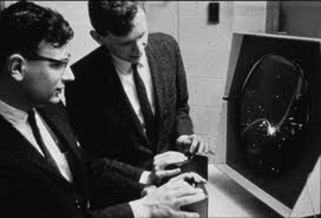

Es difícil poner una fecha exacta al origen de los videojuegos, pero podemos comenzar en 1947. Fue en ese año cuando se registró una patente en Estados Unidos acerca de un dispositivo de entretenimiento que consistía en disparar a aviones en una pantalla de tubo de rayos catódicos (CRT). Thomas T. Goldsmith, Jr. y Estle Ray Mann aparecen como sus autores. Bien pudieron ser los padres del concepto de videojuego.
El Nimrod, construido en 1951, se considera primer ordenador diseñado exclusivamente para jugar al Nim, un juego donde jugador y máquina se alternaban para retirar palitos de unos montones.
Poco después, en 1952, Alexander S. Douglas programó una versión de las tres en raya (Noughts and Crosses) que se ejecutaba en el ordenador EDSAC de la Universidad de Cambridge en 1952. No tuvo mucha repercusión dado que solamente podía ejecutarse en el ordenador de dicha universidad.
William Higinbotham podría considerarse como el creador del videojuego multijugador. Su "tenis para dos" permitía a dos jugadores competir en el mismo juego. Se exhibió públicamente durante unas jornadas de puertas abiertas celebradas en su empresa. Aunque fue disfrutado por cientos de personas, no llegó al público adecuado y por tanto no condicionó la aparición de otros videojuegos.
En 1961, un estudiante del MIT de nombre Stephen Russell desarrolló un videojuego para dos jugadores llamado Spacewar! que funcionaba en ordenadores PDP-11. Posteriormente el juego fue mejorado por otros compañeros de Stephen, distribuyéndose como software de dominio público a través de la ARPAnet, la antecesora de Internet.
Pero no fue hasta comienzos de los años 70 cuando se extendió el uso de los videojuegos en las casas y en los salones de máquinas recreativas. Los responsables fueron Ralph Baer y Nolan Bushnell, el primero mediante el diseño y la comercialización de la primera consola de videojuegos: la Magnavox Odyssey, y el segundo por la fundación de una de las empresas de videojuegos más influyentes de la historia: Atari. Esta compañía creó innumerables máquinas recreativas y la primera consola que fue un éxito de ventas: la Atari 2600.
A partir de ahí, todo fue historia.